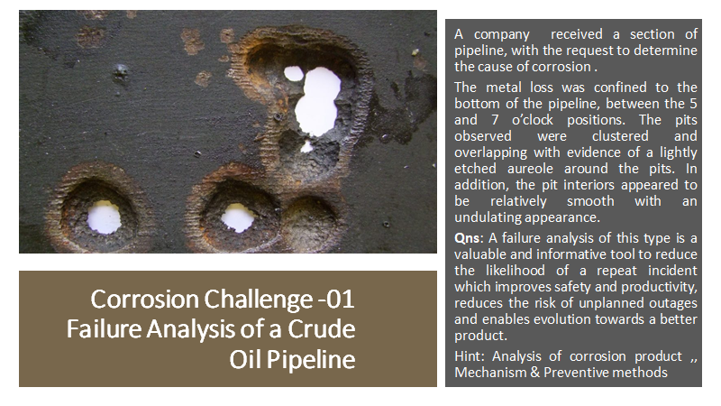
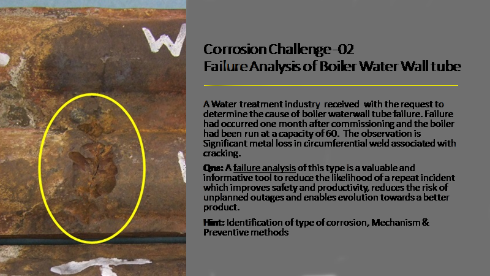

Problem 1:
Analysis
Insulation Failure
Standard fibreglass insulation does not offer an effective moisture barrier for cold water pipes, contrary to manufacturer claims. Condensed region humidity causes a secondary corrosion state on the pipe's exterior, which is usually unseen. External corrosion losses, which are most common in cool water and dual temperature systems, can be 10 times or more than interior corrosion rates. as the pipe is corroded in the position between 5 and 7'O clock we can say this an insulation failure as the humidity in that region is more.
Under Deposit Corrosion
One of the most harmful types of corrosion to a piping system is under deposit corrosion. It's commonly referred to as "cell corrosion" since it's aggressive and localised, causing deep penetration of the metal surface while generating less general corrosion in the surrounding areas. All corrosion forces attack a small number of individual sites due to surface deposits, electrical imbalance, or some other beginning mechanism.
Mechanism

Prevention of Microbiologically Influenced Corrosion (MIC)
- Regular mechanical cleaning if possible
- Chemical treatment with biocides to control the population of bacteria
- Complete drainage and dry-storage
Problem 2:
Types of Corrosion
The main reason for the failure of the boiler water wall tube is due to overheating. The pressure is so high as the temperature is so high. chemicals incorrected mounts high temperature makes the oxygen to attack the metal shut down and leaving it.
Mechanism

Prevention
- The standards of water quality of the boiler water-wall tube should be implemented strictly in the operation process, in order to improve the operating environment of the boiler tube, especially to control the oxygen content in the water
- Preventing the boiler tube from exceeding the working temperature and working pressure can also slow down the oxidation corrosion
- Regular cleaning and wall thickness inspection of boiler tubes are also extremely important.